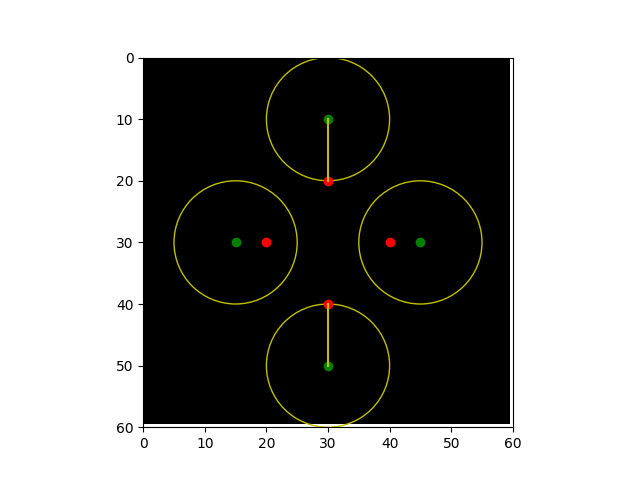

Source
SourceNote
Click here to download the full example code or to run this example in your browser via Binder
Hausdorff Distance¶
This example shows how to calculate the Hausdorff distance between two sets of points. The Hausdorff distance is the maximum distance between any point on the first set and its nearest point on the second set, and vice-versa.
import matplotlib.pyplot as plt
import numpy as np
from skimage import metrics
shape = (60, 60)
image = np.zeros(shape)
# Create a diamond-like shape where the four corners form the 1st set of points
x_diamond = 30
y_diamond = 30
r = 10
fig, ax = plt.subplots()
plt_x = [0, 1, 0, -1]
plt_y = [1, 0, -1, 0]
set_ax = [(x_diamond + r * x) for x in plt_x]
set_ay = [(y_diamond + r * y) for y in plt_y]
plt.plot(set_ax, set_ay, 'or')
# Create a kite-like shape where the four corners form the 2nd set of points
x_kite = 30
y_kite = 30
x_r = 15
y_r = 20
set_bx = [(x_kite + x_r * x) for x in plt_x]
set_by = [(y_kite + y_r * y) for y in plt_y]
plt.plot(set_bx, set_by, 'og')
# Set up the data to compute the hausdorff distance
coords_a = np.zeros(shape, dtype=bool)
coords_b = np.zeros(shape, dtype=bool)
for x, y in zip(set_ax, set_ay):
coords_a[(x, y)] = True
for x, y in zip(set_bx, set_by):
coords_b[(x, y)] = True
# Call the hausdorff function on the coordinates
metrics.hausdorff_distance(coords_a, coords_b)
# Plot the lines that shows the length of the hausdorff distance
x_line = [30, 30]
y_line = [20, 10]
plt.plot(x_line, y_line, 'y')
x_line = [30, 30]
y_line = [40, 50]
plt.plot(x_line, y_line, 'y')
# Plot circles to show that at this distance, the hausdorff distance can
# travel to its nearest neighbor (in this case, from the kite to diamond)
ax.add_artist(plt.Circle((30, 10), 10, color='y', fill=None))
ax.add_artist(plt.Circle((30, 50), 10, color='y', fill=None))
ax.add_artist(plt.Circle((15, 30), 10, color='y', fill=None))
ax.add_artist(plt.Circle((45, 30), 10, color='y', fill=None))
ax.imshow(image, cmap=plt.cm.gray)
ax.axis((0, 60, 60, 0))
plt.show()
Total running time of the script: ( 0 minutes 0.120 seconds)